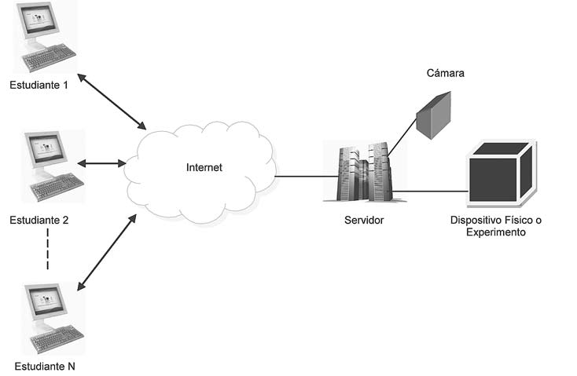
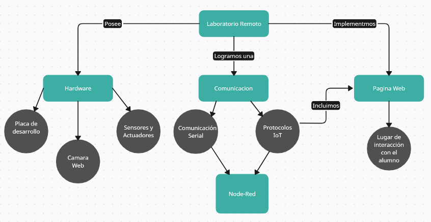

Sobre la página
¿Qué son los laboratorios remotos?

Un laboratorio remoto es una herramienta tecnológica, compuesta por software y hardware, que permite a docentes y estudiantes realizar, a través de Internet, sus prácticas como si estuvieran en un laboratorio tradicional. Los usuarios utilizan y controlan los recursos disponibles en un laboratorio mediante el uso de sensores e instrumentación que permiten interactuar con equipos reales en vez de utilizar simulaciones y sin requerir la presencia física en el laboratorio.
Estos, a diferencia de las simulaciones, nos dan acceso a equipamiento real. Los sensores nos transmiten la información recogida en cada instante de observación desde el lugar físico de experimentación hasta cada uno de los terminales conectados en cada momento. Los usuarios pueden, por tanto, familiarizarse con interfaces que se corresponden con equipos reales que manejan a distancia.
Una ventaja destacable de los laboratorios remotos es la ruptura de los límites espacio-temporales, al no requerir la presencia física del usuario en el laboratorio. De esta manera, los laboratorios están disponibles más allá del horario escolar o las prácticas presenciales programadas, lo que permite al alumnado incrementar el número de horas de práctica, requisito imprescindible para el aprendizaje en las materias científico-tecnológicas.
¿Cómo funcionan?
El principio de funcionamiento es bastante sencillo en términos generales
Hardware
En esta parte tendremos todo lo relacionado con la parte tangible del experimento. Utilizaremos alguna placa de desarrollo, como por ejemplo Arduino u otra, para obtener datos con los sensores que dispongamos y realizar las acciones pertinentes al experimento deseado.
Comunicación
Utilizando una placa ESP8266, que estará conectada a la Arduino, tomaremos los datos y serán enviados a través de Wi-Fi, ya que esta posee un módulo integrado que lo permite. Llevaremos estos datos al broker público de Mosquitto que es compatible con el protocolo MQTT, donde se almacenarán los datos. Una vez aquí nos valdremos del Programa Node-Red que nos permitirá recuperar dichos datos para luego procesarlos y ser reenviados a donde sea que los necesitemos.
Página Web
Aquí estará la parte interactiva con el alumno, donde podrá controlar el experimento de forma remota. Este posee un servicio de MQTT, con lo que podremos recibir y enviar datos desde la misma página para luego llegar nuevamente a Node-Red y ser procesados para su posterior reenvío a la ESP8266 que le pasará a la placa de desarrollo seleccionada para ejecutar los comandos necesarios.
¿Qué podrás encontrar aquí?
En esta página estarán alojados todos los experimentos de la Universidad, pudiendo interactuar con cualquiera de ellos en cualquier momento que se desee. Esto le permite al alumno liberarse de las limitaciones de tiempo y movilidad, ya que podrá realizar sus prácticas desde cualquier lugar y hora que desee. A su vez en cada experimento podrás encontrar un video en tiempo real que te acompañará para que veas el experimento en funcionamiento con el fin de una experiencia mucho más interactiva.